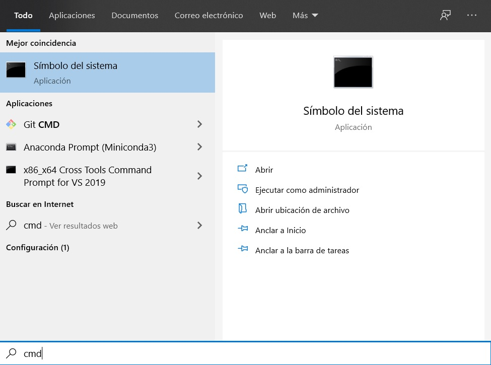
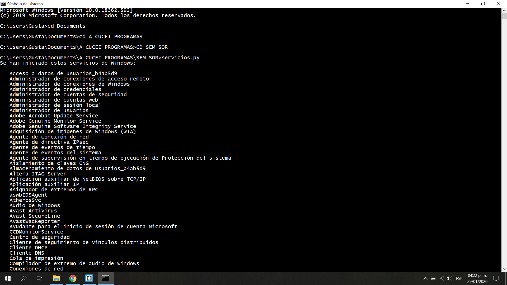
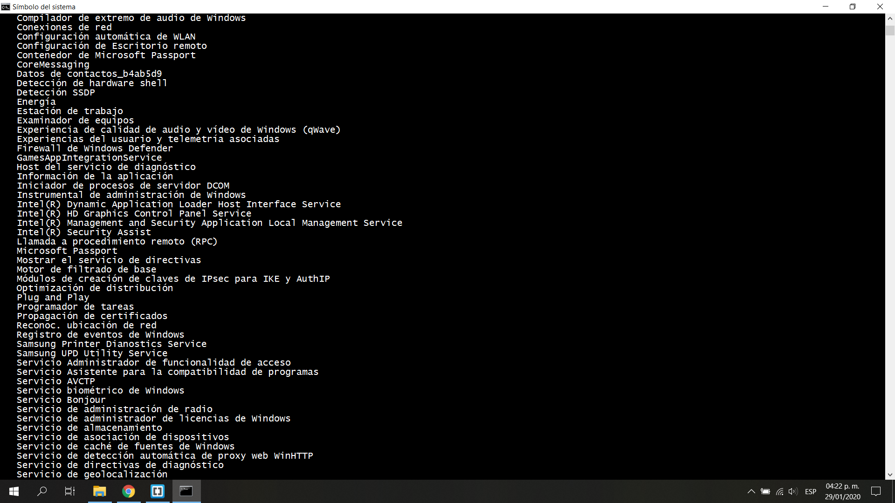
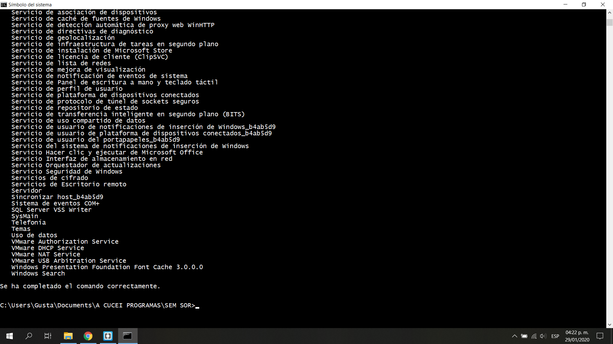
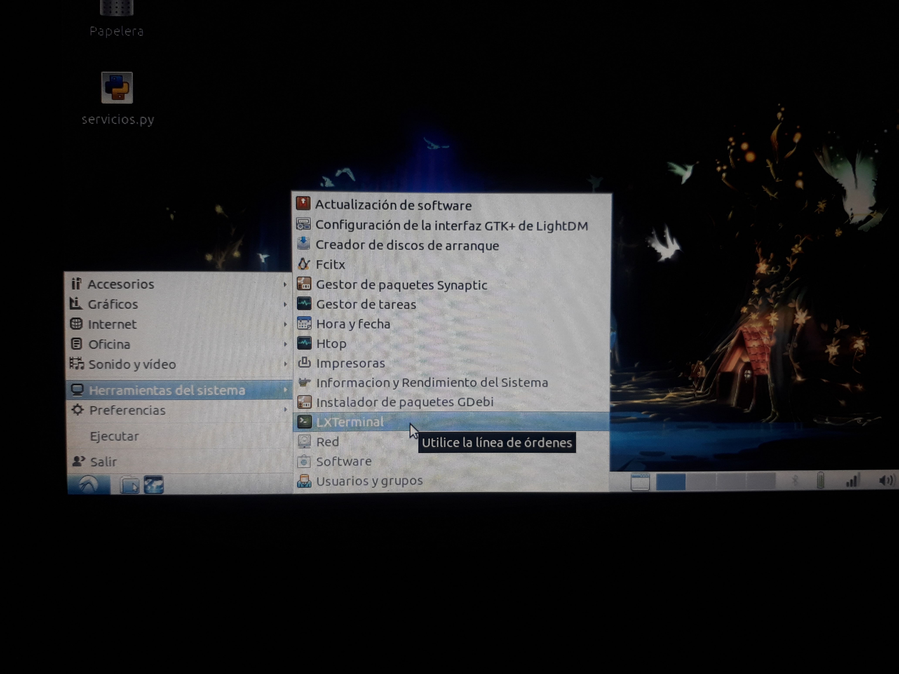
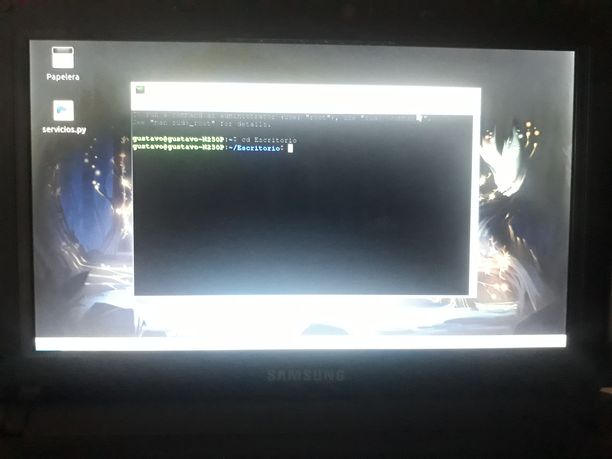

Seminario de Solución de Problemas de Sistemas Operativos de Red
D05
ACTIVIDAD 2

Desarrollar un programa para ver los servicios de windows y linux.
Programa
Ejecutar en Windows 10
Ejecutar en Lubuntu
Programa
Para poder ver los servicios de Windows y Linux se realizó un programa en el lenguaje de Python. Dicho programa es simple puesto que verifica el tipo de Sistema Operativo, si es Linux ejecuta el comando "service --status-all" el cual muestra todos los servicios en ejecución y detenidos, si no es Linux ejecuta el comando "net start", dicho comando es compatible con Windows y del mismo modo muestra todos los servicios.
Para realizar dicho programa se requiere de Python 3.6. En Lubuntu no tendremos problemas puesto que ya viene instalado por defecto, sin embargo para poder ejecutar el programa en Windows 10 necesitaremos instalarlo, podemos accceder a Python
aquí
A continuación se muestra el programa empleado.
Ejecutar en Windows 10
Una vez instalado Python y ya tengamos nuestro programa listo, abrimos la terminal de Windows.
Nos movemos al directorio donde se encuentre nuestro programa y lo ejecutamos, enseguida se mostrarán los servicios de Windows.
Aquí se muestran más servicios.
Aquí se muestran los últimos servicios.
Ejecutar en Lubuntu
Una vez que tengamos el programa en nuestro equipo, tenemos que dirigirnos a la terminal.
Ya que estemos en la terminal nos movemos al directorio donde se encuentra nuestro programa.

Cuando estemos en el directorio correcto ejecutamos el programa con la sentencia "python3 'nombre'.py", enseguida se mostrarán los servicios.
[ + ] = Servicios ejecutandose.
[ - ] = Servicios detenidos.